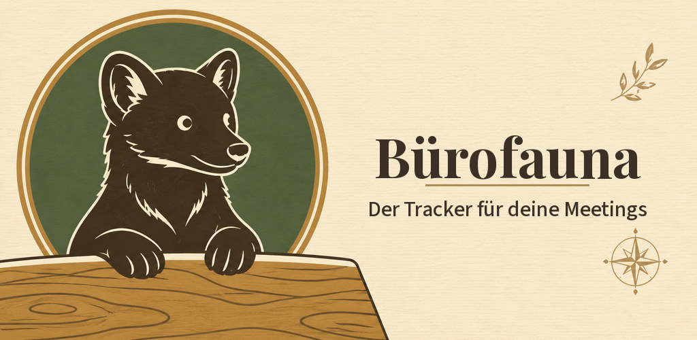
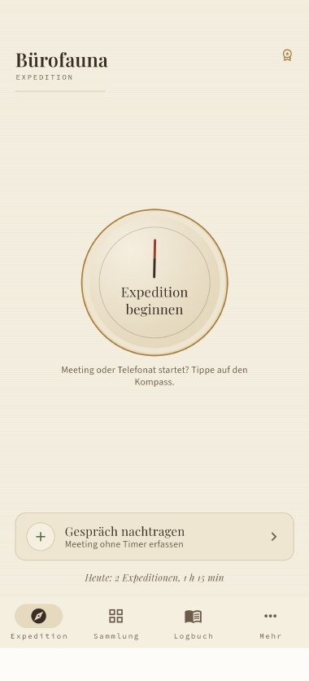
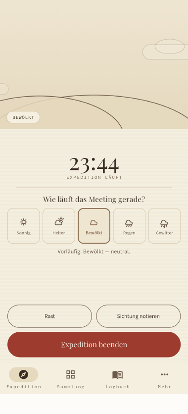
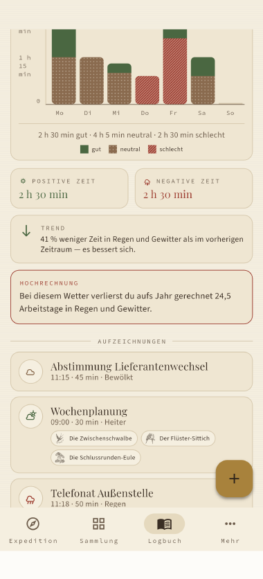
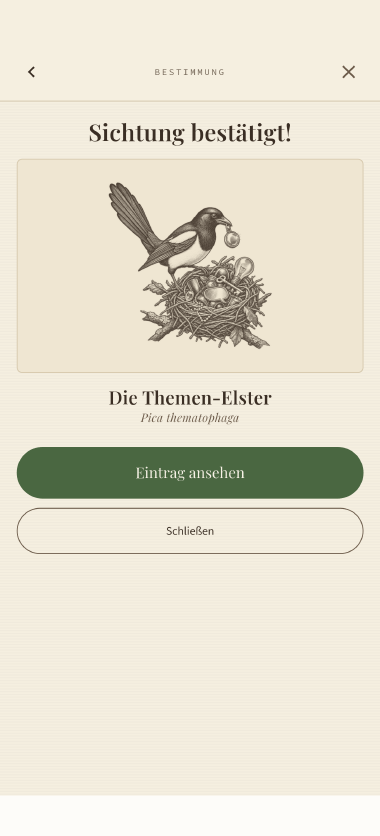
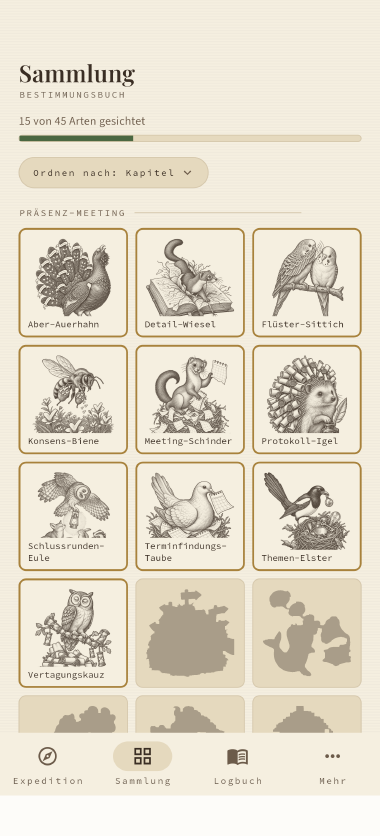
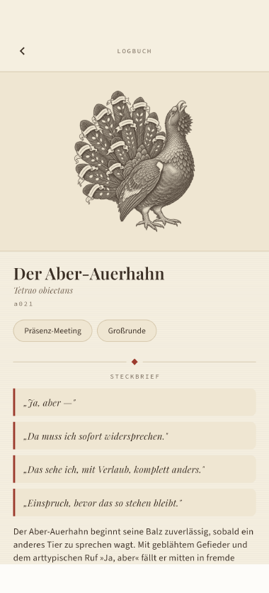
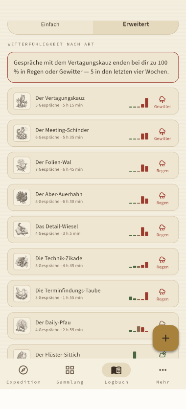

Bürofauna
Der satirische Tracker für deine Meetings

Bürofauna misst, wie viel Arbeitszeit in Besprechungen und Telefonaten steckt — und was sie taugt. Die Zeitmessung läuft weiter, auch wenn die App geschlossen ist; bewertet wird jedes Gespräch auf einer fünfstufigen Skala.
45 Verhaltensmuster lassen sich bestimmen, und zwar über Fragen zum beobachteten Verhalten statt über eine Namensliste. Zu jedem gehört eine Einordnung, warum jemand so handelt, und konkrete Vorschläge, wie man damit umgeht.
Die Auswertung zeigt nach Tag, Woche, Monat und über den gesamten Bestand, wie viel Zeit in guten, neutralen und schlechten Gesprächen liegt — mit Vergleich zur Vorperiode und Hochrechnung aufs Jahr. Alles bleibt auf dem Gerät: kein Konto, keine Anmeldung, keine Cloud.
Die App läuft hoch wie quer; im Querformat rückt die Navigation an den Rand und die Seiten stellen sich in Spalten. Wer es ruhiger mag, schaltet die Animationen ab, und große Systemschriften macht die App mit, statt Text abzuschneiden.
Diese Funktionen stecken in einem Bestimmungsbuch. Ein Gespräch ist eine Expedition, die Bewertung ein Wetterbericht von sonnig bis Gewitter, ein erkanntes Verhaltensmuster eine Sichtung — und die 45 Muster sind Arten mit lateinischem Namen, Steckbrief, typischen Ruflauten und eigener Illustration im Stil eines viktorianischen Naturkundebuchs. Wer eine Art zum ersten Mal bestimmt, schaltet sie in seiner Sammlung frei. Das ist kein Selbstzweck: Eine Strichliste über schlechte Meetings führt niemand lange, ein Sammelalbum schon. Karikiert wird dabei ausschließlich Verhalten in Gesprächen — nie Menschen.







